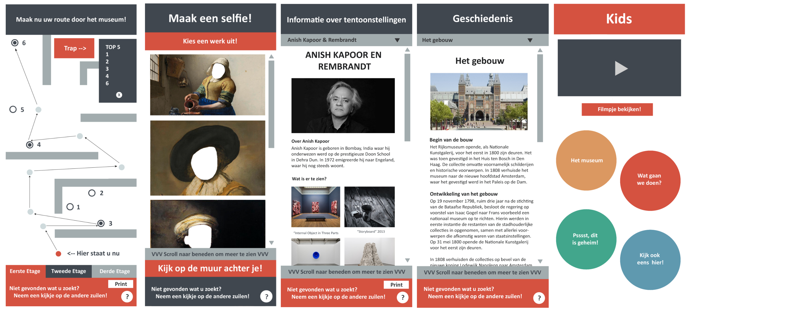

Dump
Dit is de dump. Hier komen extra bijlagen en creaties.
INTERACTIEVE ZUILEN RIJKSMUSEUM | WEEK 2
Toelichting:
Voor de groepsopdracht van week 2 heb ik designs gemaakt voor vijf interactieve zuilen in het Rijksmuseum. Hieronder zijn ze te zien. Gemaakt met Adobe Photoshop.

ONTWERP PORTFOLIOSITE | WEEK 1
Toelichting:
De eerste versie van het ontwerp van de portfoliosite, toen ik nog niet afwist van het bestaan van Pencil. Gemaakt met Cacoo (cacoo.com).
Toelichting:
Dit was het eerste ontwerp van de header. Zoals te zien in het bovenstaande ontwerp staat er boven aan de pagina "MMIO". Ik was van plan deze daar te plaatsen. Maar uiteindelijk heb ik dit toch verworpen. Gemaakt met Gimp 2.